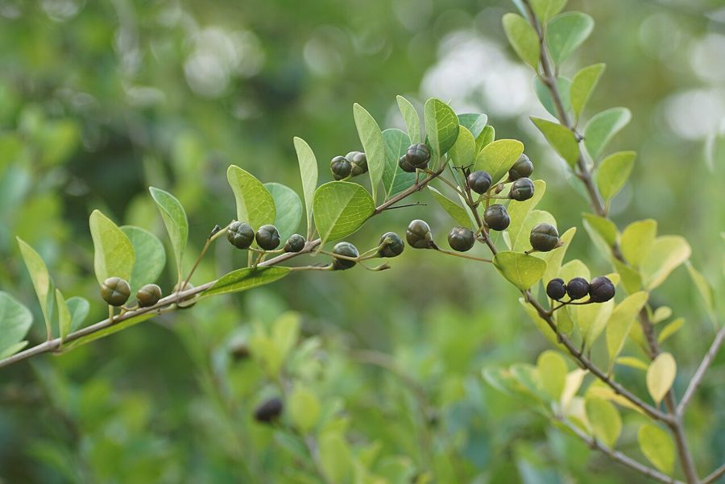

लंजईGlory Bower
Volkameria inermis · Lamiaceae · FLR-0261

- Scientific name वैज्ञानिक नाम
- Volkameria inermis L.
- Family कुल
- Lamiaceae
- Hindi हिंदी
- लंजई
- Local names स्थानीय नाम
- lanjai, glory bower, volkameria
- Status here यहाँ की स्थिति
- native
- Movement आवागमन
- Resident, here all year
- Known from कहाँ दर्ज
- Others have published records from the Basti–Ayodhya districts बस्ती–अयोध्या के ज़िलों से दूसरों के प्रकाशित अभिलेख
- IUCN IUCN
- not evaluated
- Review समीक्षा
- audited and independently read
When to look कब देखें
Present all year. साल भर मौजूद।
Uses and possibilities उपयोग और संभावनाएँ
“Traditional medicine” means a documented traditional use, not a claim that it works. Nothing on this page is medical advice.
Drawn from the documented uses in the profile below, where each is labelled traditional, current or a research lead. All uses →
Tell it apart from इनसे अलग पहचानें
लंजई / Glory Bower
Volkameria inermis L. — Lamiaceae
लंजई — पूर्वी उत्तर प्रदेश के वनों के किनारों और बाग़ों में पाई जाने वाली एक झाड़ी, जिसके फूल सफेद और बैंगनी रंग के होते हैं। यह बहुत सुंदर है और परागण के समय इसके आस-पास तितलियाँ और कीड़े दिख जाते हैं। इसकी पत्तियों का पारंपरिक चिकित्सा में उपयोग होता है।
Quick Identification त्वरित पहचान
| Feature | Description |
|---|---|
| Size | Semi-deciduous shrub, 1.5–2.5 m tall |
| Leaves | Ovate to lanceolate, 6–12 cm long, with toothed margins; opposite or sub-opposite |
| Flowers | White or pale pink with purple stamens; small, in axillary clusters |
| Fruit | Small, round drupe, 0.8–1 cm, initially green, ripening black |
| The test | Opposite leaves and delicate white flowers with purple stamens are distinctive |
Field tip: Look for a shrub with opposite toothed leaves and small white flowers with purple stamens in late monsoon. The entire plant is aromatic when brushed.
Morphology आकारिकी
Biometrics (typical measurements in the Gangetic plain):
| Measurement | Range |
|---|---|
| Height | 1.5–2.5 m |
| Leaf length | 6–12 cm |
| Leaf width | 2.5–5 cm |
| Flower diameter | 0.8–1.2 cm |
| Fruit diameter | 0.8–1 cm |
Stem and branches: Woody; smooth or sparsely hairy; becoming greyish-brown with age.
Leaves: Opposite or sub-opposite, ovate to lanceolate, with serrate or serrulate margins. The leaf base is acute or rounded; the apex acute. Leaves are glabrous or sparsely hairy.
Flowers: Small, white or pale pink, with prominent purple stamens. The corolla is tubular, with 4–5 lobes. Flowers are arranged in axillary clusters (cymes or racemes).
Fruit: A small round drupe, initially green, ripening black. Contains one or two seeds.
Aromatic: Leaves and stems have a faint aromatic smell.
हिंदी: पत्ती आमने-सामने, दाँतेदार। फूल सफेद, बैंगनी पुंकेसर। फल छोटा, काला।
Behaviour & Ecology व्यवहार और पारिस्थितिकता
Volkameria inermis is native to tropical Asia. It grows in woodlands and forest margins and is often cultivated in gardens for its attractive flowers. The plant attracts pollinators, particularly bees and butterflies. It is drought-tolerant and grows in a range of soils. Fruit may be dispersed by birds.
हिंदी: वन के किनारे उगता है। सूखा सहनशील। तितलियाँ और मधुमक्खियाँ फूलों पर आती हैं। पक्षी फल खाते हैं।
Life Cycle / Phenology जीवन चक्र
| Month / season | Event |
|---|---|
| January–May | Leaf growth and vegetative expansion |
| June | Flowering begins with monsoon |
| June–November | Continuous flowering |
| October–November | Fruit ripening; black fruits visible |
| November–December | Partial leaf fall; slower growth |
Blooms abundantly during and after the monsoon season.
हिंदी: बारिश में फूल निकलते हैं। जून से नवंबर तक लगातार फूल। फल काले रंग में पकते हैं।
Associated Species / Interactions संबंधित प्रजातियाँ
- Pollinators: Bees, butterflies, and other insects visit the flowers.
- Seed dispersal: Birds consume the fruits and disperse the seeds.
Pests and Diseases कीट और रोग
- Minor leaf spots in humid seasons.
- Generally disease-resistant and pest-free.
Agricultural / Human Relevance कृषि प्रासंगिकता
Traditional medicinal use (documented uses; not medical advice):
- Anti-inflammatory: Leaf decoction used traditionally for inflammation and swelling.
- Cough and cold: Leaves are used in traditional preparations for respiratory complaints.
- Wounds: Leaf paste applied to minor wounds for healing.
Ornamental value: The attractive flowers and semi-deciduous habit make it suitable for gardens and hedgerows.
हिंदी: पारंपरिक रूप से सूजन और खाँसी की दवा है। पत्तियों को उबालकर पीया जाता है। बाग़ों में सजावट के लिए लगाया जाता है।
Expected Locally स्थानीय रूप से अपेक्षित
Not a field record. Written from published accounts for eastern Uttar Pradesh. No confirmed local sighting yet — if you have seen it, that is what the atlas needs.
अभी तक स्थानीय पुष्टि नहीं। यह विवरण प्रकाशित स्रोतों से है, किसी अवलोकन से नहीं।
Glory Bower is to be expected in open woodlands and forest margins in Basti district, as well as in cultivated gardens. GBIF holds published records from the core districts. The plant is most visible when flowering (June–November). A first confirmed local record would be a photograph showing the white flowers with purple stamens and opposite toothed leaves with place and date.
Distribution वितरण
Global range: Tropical Asia; from India to southeast Asia.
In India: Widespread in tropical and subtropical regions.
In Uttar Pradesh: Found in open woodlands and gardens throughout the state.
In Basti district / eastern UP: Expected in forest margins and cultivated areas; status uncertain.
Research Questions शोध प्रश्न
Anyone can investigate these | कोई भी इन प्रश्नों की जाँच कर सकता है
- What pollinators visit the flowers, and what time of day is most active? / फूलों पर कौन से कीड़े आते हैं? — Observe for extended periods.
- Do birds eat the black fruits, and which species? / क्या पक्षी फल खाते हैं? — Watch fruiting plants; record birds and behaviour.
- How is the leaf decoction prepared and used traditionally in your village? / पारंपरिक दवा कैसे बनाई जाती है? — Interview local practitioners.
- How does the flowering abundance vary between sun and shade plants? — Compare flower production in different light conditions.
- Can new plants be propagated from cuttings? — Test vegetative propagation methods.
Similar Species मिलती-जुलती प्रजातियाँ
| Species | How to tell apart | हिंदी | |
|---|---|---|---|
| [[nirgundi\ | Nirgundi]] (Vitex negundo) | Leaves are compound (palmate with 5 leaflets), not simple; flowers are small and clustered | निर्गुंडी — पत्ती पाँच भागों में, फूल छोटे, घने |
| Jatropha (Jatropha curcas) | Lobed leaves, not simple; flowers red or pink; toxic latex | रतनजोत — पत्ती बँटी हुई, लाल फूल |
Field rule: Simple opposite toothed leaves with small white flowers bearing purple stamens is Volkameria inermis.
Taxonomy & Classification वर्गीकरण
Original description. Described by Linnaeus in 1753 in Species Plantarum. The genus Volkameria is now often treated as synonymous with Clerodendrum, but the older name is retained here. The epithet inermis means "unarmed" or "without prickles."
Subspecies. Monotypic — no subspecies are currently recognised.
Family and order placement. Order Lamiales, family Lamiaceae (mint family).
Phylogenetic notes. Volkameria is closely related to Clerodendrum and shares morphological features with other Lamiaceae genera.
IUCN status rationale. Not evaluated. Widespread in cultivation and wild; no conservation concerns.
Photo Gallery फोटो गैलरी
Photos needed आवश्यक फोटो
- [ ] Whole shrub in flower (पूरी झाड़ी)
- [ ] White flowers with purple stamens (फूल)
- [ ] Leaf detail (पत्ता)
- [ ] Black ripened fruits (फल)
No photos yet — add field photos to media/species/glory_bower/ and run node scripts/sync_photos.js.
References संदर्भ
- Linnaeus, C. (1753). Species Plantarum. Vol. 1, p. 625. Laurentii Salvii, Holmiae.
- Hooker, J.D. (1885). Flora of British India, Vol. 4. L. Reeve, London.
- Chopra, R.N., Nayar, S.L. & Chopra, I.C. (1956). Glossary of Indian Medicinal Plants. CSIR, New Delhi.
- Kirtikar, K.R. & Basu, B.D. (1935). Indian Medicinal Plants, 2nd ed., Vol. 2. Lalit Mohan Basu, Allahabad.
- Botanical Survey of India — Flora of Uttar Pradesh.
- GBIF Occurrence Data — Volkameria inermis, India (2010–2025).
Source file: species/flora/shrubs/glory_bower.md